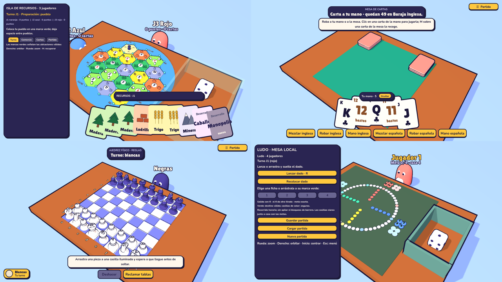
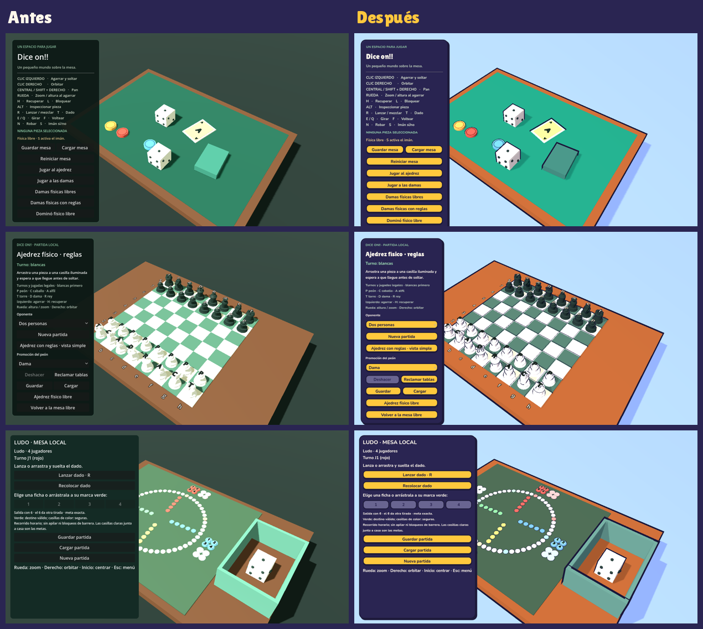
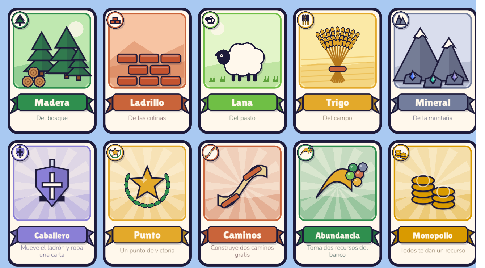
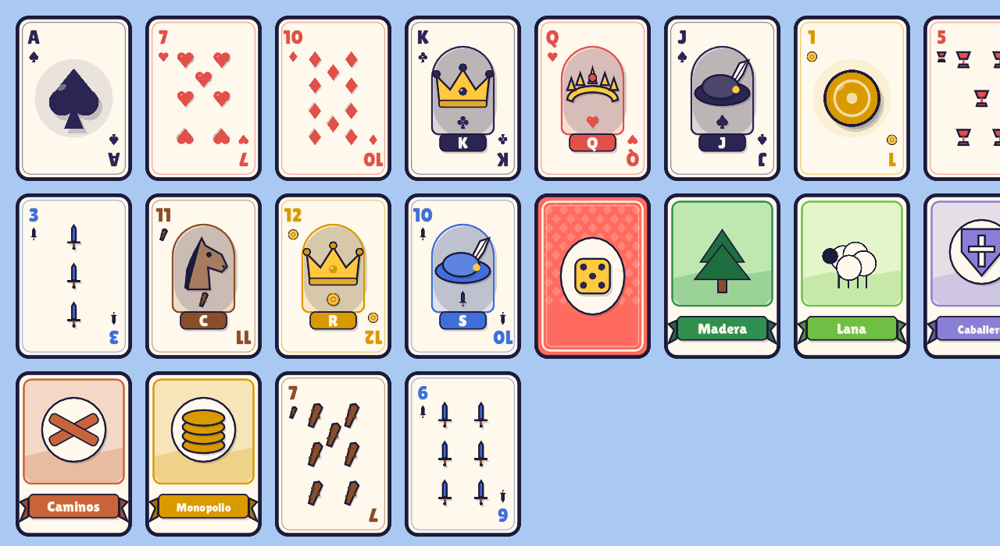

Mesa libre
La mesa sandbox con dados, fichas y cartas físicos: mezcla, roba, coloca y experimenta sin reglas. Incluye un tutorial paso a paso para aprender a agarrar, soltar y mover la cámara en tres minutos.
Con tutorialDemo gratuita · Windows y Linux
Una mesa 3D compartida para jugar a los clásicos en el mismo equipo: piezas físicas con física asistida, bots con tres niveles de dificultad y guardado local. Sin internet, sin esperar turno.
La demo incluye la mesa libre con tutorial, brisca y parchís. El resto de mesas se ve en el menú y se abre en el juego completo.

Qué incluye la demo
La mesa sandbox con dados, fichas y cartas físicos: mezcla, roba, coloca y experimenta sin reglas. Incluye un tutorial paso a paso para aprender a agarrar, soltar y mover la cámara en tres minutos.
Con tutorialEl clásico de cartas para dos. Física de cartas reales, mezcla asiduida y robo desde la pila, con bot para jugar solo.
Contra el botReglas españolas completas: salir con 5, barreras de dos fichas, comer vale 20 y meta 10. En la demo, dos variantes: 4 jugadores y 2 jugadores, con bots para completar la mesa.
Contra bots · 2 y 4 jugadores
Juego completo
Cada módulo se puede jugar en mesa local o contra bots, con tres niveles de dificultad (fácil, normal, difícil). El humano siempre empieza como J1; el resto de butacas pueden ser bots.
Reglas españolas con barreras, comer y doblar. Fichas físicas con dado.
La misma variante para dos butacas, contra un bot.
Carrera con dado físico y fichas: salir con 5, el 6 da otra tirada y vale 7 sin fichas en casa; barreras y seguros.
Damas inglesas adaptadas: vista simple con reglas, fichas físicas asistidas o mesa libre.
Vista simple, físico con reglas o físico libre, con seis siluetas originales por color y IA para las negras.
Doble seis: fichas físicas libres o con reglas para dos, con cadena asistida.
Una isla de recursos inspirada en Catán para tres o cuatro jugadores: pueblos, caminos, ciudades, cartas de desarrollo, ladrón, puertos y comercio con el banco. Dados físicos lanzables con teclado o ratón, interfaz contextual y guardado local.
Dados, fichas y cartas sin reglas: la caja de herramientas de la mesa.
Por qué Tablerama


Primeros pasos
Preguntas frecuentes
La demo es gratuita y no requiere cuenta ni conexión. Se descarga e instala como un programa normal y se juega al instante.
No. Se puede jugar sin límite. Lo que la demo limita es el contenido: la mesa libre, la brisca y el parchís; el resto de mesas se muestra en el menú con un aviso de que pertenecen al juego completo.
Sí. Cada mesa con reglas guarda la partida localmente (con copia anterior). En la demo se guarda igual que en el juego completo.
Sí. En «Jugar con bots» se elige la dificultad y la mesa; el humano es siempre el jugador 1 y el resto de butacas son bots. En la demo, la brisca y el parchís se pueden jugar así.
El juego completo añade todas las mesas del catálogo (ajedrez, damas, dominó, ludo, la isla de recursos…), cada una con sus reglas, bots y guardado. La demo no tiene fecha de expiración.
Windows o Linux con gráficos compatibles con OpenGL. Resolución de 1280×720 recomendada (escala a ventana). No hace falta mando, teclado y ratón bastan; es local, no hay red.
Descarga la demo, escoge mesa y dificultad, y empieza a jugar en minutos.